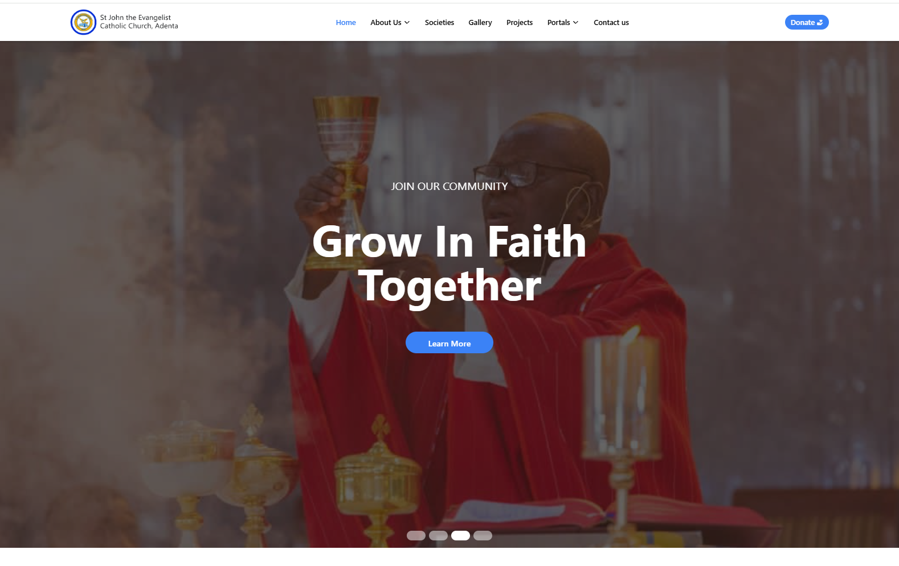

⚡Welcome I'm Omari 🚀 Dive Into and Explore My Portfolio
||Only those who dare to fail greatly can ever achieve greatly||
I develop innovative, code-driven solutions to technical problems and am deeply committed to the craft. Let's collaborate to build impactful, high-performance systems.
About Me
I am Owusu Bright Omari, a cybersecurity major at Grambling State University.
I specialize in developing innovative and efficient solutions in front-end web design, back-end programming, data science, computer systems, network management, and cybersecurity. My passion lies in transforming ideas into functional, visually appealing, and engaging products to deliver impactful tech solutions. I have a strong interest in photography and public speaking, further honing my communication and creative skills.
Projects
Dive deeper into each project's specifics and technologies
Website Vulnerability Scanner
This project is designed to strengthen website security and simplify vulnerability assessments without requiring deep technical expertise. It is built with casual users and non-technical team members in mind, making it easier for them to understand security risks and take action.
The tool is developed using Python with asynchronous programming (aiohttp) to efficiently scan websites for vulnerabilities. It integrates Gemini 2.0 API to explain security risks in simple terms and suggest practical solutions. The colorama module provides a color-coded feedback system, visually indicating the severity of vulnerabilities. This ensures that both technical and non-technical users can quickly assess and address potential threats.
This project is designed to give my church a strong and engaging online presence, making it easier to share updates, events, and important information with members and visitors. It is built with church administrators and the congregation in mind, ensuring a user-friendly experience for all.
The website is developed using HTML, CSS, and JavaScript to create a responsive and visually appealing design. It includes sections for church services, events, and contact details, helping to connect the church community, improve communication, and welcome new members with ease.
ReactTailwind CSSNode.jsNetlifyWeb Development

Pomodoro Play Extension
This project is designed to enhance focus and productivity by combining the Pomodoro technique with engaging break-time activities. It is built with casual users in mind, making time management more interactive and enjoyable.
The tool is developed using HTML, CSS, and JavaScript to create a user-friendly timer that allows users to set custom focus and break periods. When break time begins, users can choose to restart the timer or play a simple 2048 game for a refreshing mental reset. This project makes productivity more engaging by blending structured work sessions with light entertainment, helping users maintain motivation and avoid burnout.
HTML/CSSJavaScriptChrome Extension API
Research Team Portal
This project is designed to serve as a centralized platform for my research team to manage activities, communicate effectively, and streamline our research workflow. Built with Firebase for login authentication, it provides secure access for team members while offering public insights for guests to follow the progress of our research.
The website is developed using HTML, CSS, and JavaScript, ensuring a clean and responsive user interface across devices. It features multiple sections for task sharing, research updates, document collaboration, and communication, enabling us to track progress, assign responsibilities, and share findings in real-time. Additionally, the website acts as a hub for research-related resources and insights, making it easier for the team to stay organized and aligned with project goals.
By integrating tools like Firebase authentication and dynamic content sharing, this project not only enhances internal collaboration but also provides transparency, allowing guests and external parties to stay informed about our research without compromising sensitive data. It showcases my ability to build functional, team-oriented platforms while solving real-world problems in collaborative research environments.
CSSJavaScriptFirebaseThree.jsEmail.jsUI/UX Design
Words Per Minute
This project is designed to help users improve their typing speed and accuracy in a fun and interactive way. It is built with casual users and typing enthusiasts in mind, making it an engaging tool for practice and improvement.
I developed the Words Per Minute game using Python and the curses module to create a terminal-based typing game. The game tests users' typing speed while encouraging accuracy, providing a challenging yet enjoyable experience. This project showcases my skills in offers a practical tool for anyone looking to enhance their typing abilities which is the fundamental skill in CS.
PythonData AnalysisUI Design
Professional Experience
Explore my professional journey, including internships, freelance projects, and volunteer work that have shaped my skills and perspective.
Junior Intern — Citizens Bank, Nsawam
Jan 2024 – Mar 2024
• Assisted the Chief Information Security Officer (CISO) in maintaining and strengthening the organization's security posture, contributing to vulnerability assessments and incident reporting.
• Identified, tested, and reported vulnerabilities on internal banking platforms to mitigate cyber risks.
Assistant Tutor & Online Coordinator — IT Team, MIGY Consult
Feb 2023 – May 2023
• Assisted in troubleshooting technical issues for students, providing step-by-step guidance and enhancing their understanding of IT concepts.
• Collaborated with IT team members to identify and implement improvements to the tutoring platform.
IT Support Volunteer — National Health Insurance Scheme
Nov 2022 – Feb 2023
• Supported staff in gathering and inputting and managing detailed client information within a secure database, ensuring accuracy and confidentiality.
• Collaborated with the IT team to design and develop a user-friendly website for efficient client data logging and management.
Skills and Tools
I have hands-on experience with a variety of programming languages and tools, including Python, HTML, CSS, and JavaScript. My coursework and personal projects have given me a solid foundation in web development, cybersecurity principles, and data handling. I'm excited to continue learning and improving my skills as I pursue opportunities in the tech industry.
HTML
Used HTML in: Church Website, Pomodoro Play Extension
CSS
Used CSS in: Church Website, Pomodoro Play Extension
JavaScript
Used Javascript in: Church Website, Pomodoro Play Extension
React
Used React in: Church Website
Tailwind
Used Tailwind in: Church Website
Node.js
Used Node.js in: Church Website
Cybersecurity
Used in: Website Vulnerability Scanner
Python
Used Python in: Words Per Minute, Website Vulnerability Scanner
In addition to programming, I am proficient with tools like Replit, Visual Studio Code (VS Code), and Git for version control. I also use Firebase, Mercurial, Postman, and platforms like GitHub to showcase my work and collaborate with peers. These tools have allowed me to build, test, and refine my projects, and I am eager to leverage them while contributing to a dynamic team.
Let's connect and Collaborate!
I am actively seeking opportunities that will expand my knowledge and connect me with like-minded professionals in technology and research. If you have roles, internships, or collaborative projects where a motivated student can contribute and learn, I'd love to connect. Feel free to reach out, and let's explore ways to create meaningful impact together!